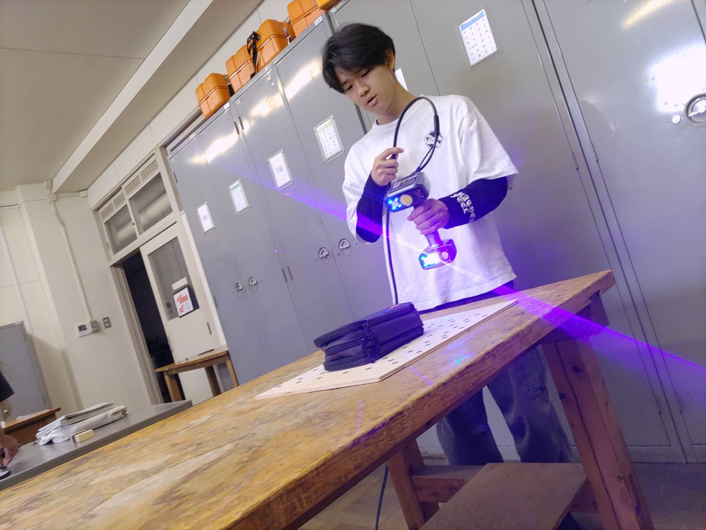

Dコース系実習とは

DコースMコースの内容を行いました。
DコースではFusionとCNC（Gコード）を学びました。
FusionとNCプログラミングについて説明していきます。
Fusionについて
Fusion360という統合型CADを利用して、ソリッドモデリングやサーフェスモデリングやフォームモデリングやメッシュデータといった様々な方式の形状データの作り方に触れ、モノの形をデジタルで表現することで、他の人と形状を正確に共有できることを体験することを目的として行いました。

6週にわたっての授業内容や学んだことなど
- 1週目：ペン立て作り
- 2週目：コマ作り
- 3週目：マグカップ作り・重心などを求めた
- 4週目：3Dスキャナで物体をスキャンした・くまのモデル・くまのチョコレート型モデル作り
- 5週目：フォトグラメトリで3Dデータ作成する・リクライニングチェア作り
- 6週目：びーこあロボットでアセンブリ
NCプログラミングについて
CNC（コンピュータ数値制御）工作機械は、製造現場における高速・高精度な生産を支える重要な機械であり、DX（デジタルトランスフォーメーション）化の基盤となる。本テーマでは、CNC工作機械を用いた機械部品の自動加工を通して、ツーリング、加工原点設定、MDI操作などの基本操作を学び、さらに加工工程の自動化・デジタル化に必要なNCプログラミング（Gコード）を習得する。
※GコードはCNC機械の共通言語であり、3Dプリンタやレーザ加工機でも用いられている。

6週にわたっての授業内容や学んだことなど
- 1週目：基本的なNCプログラミング（フライス盤）について学習した。そして課題の形になるようにプログラミングを施した
- 2週目：基本的なNCプログラミング（旋盤）について学習した。そして課題の形になるようにプログラミングを施した
- 3週目：1週目に作成したプログラムコードで実際に金属に加工を施した
- 4週目：3週目とは別の人が加工するのを助ける
- 5週目：2週目に作成したプログラムコードで実際に金属に加工を施した
- 6週目：4週目とは別の人が加工するので、支援する